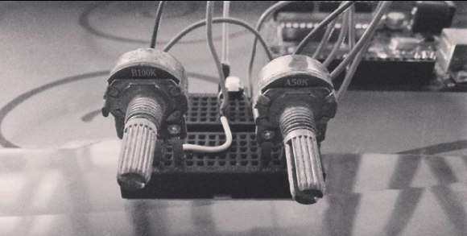
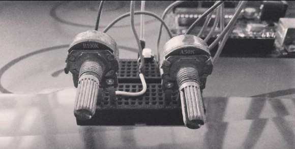

Creative Technologist - The Tech Academy
Home > The Tech Academy
Overview
In essence, The Tech Acacemy (TTA) is a social enterprise in Bangladesh that focuses on teaching children Electronics, Computer Programming and other STEM related topics. TTA is the one of the first start-ups to have ever executed something like this for children in Bangladesh.
Other than teaching, TTA also maintained a Research & Development Lab where TTA students and staff collaborated on creative projects (installations, interactive systems, games etc). These were a mix of client-based and experimental projects.
I was involved with TTA from January 2017 - May 2017.
Involvement
- Worked with various Creative Coding/Technology platforms in the R&D lab.
- Tutored children from different age groups about the fundamentals of Computer Programming and Electronics using open-source tools like Processing and Arduino.
- Planned teaching strategies and class curriculum that facilitated enjoyable learning experience; Also created project documentations.
- Developed variants of classic games like Pong to demonstrate Game Development in the classroom.
Projects
Motion Sensing Camera for wildlife photography
Here, one of the kids (Samir) attempted to design a prototype for a motion-sensing camera that can be used for wild-life photography. The prototype makes use of an ultrasonic sensor to detect anything in front of it. Once detected, the sensor triggers a program written in Processing to snap a frame off the webcam.
Flappy Eggy
Flappy eggy is essentially a Flappy Bird clone with a twist - the player has to physically jump on a platform in order to navigate the bird. The "platform" was equipped with piezoelectric sensors and an Arduino read the change in voltage to detect jumps.
This was a team effort. I was responsible for implementing and calibrating the hardware part. Moreover, I initiated the development of an Android version of the game minus the sensors.
 

Noise Box
Noise Box makes use of the Minim Library in Processing to alter the features of a sound, such as pitch and volume. Moreover, these features can be manipulated by a simple interface I created using a potentiometer, a button and an Arduino.